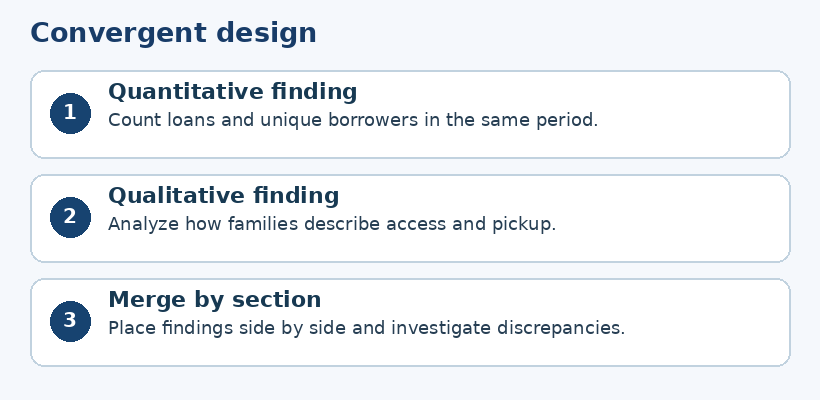
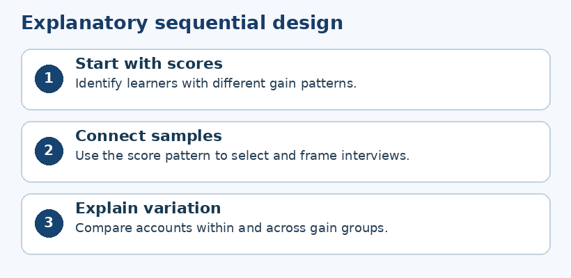
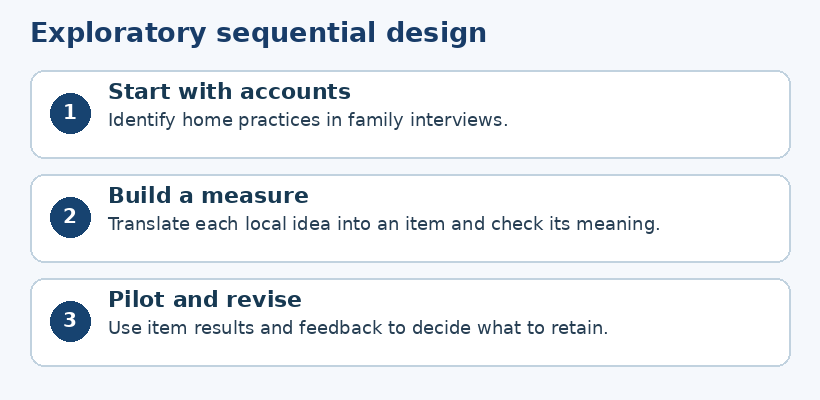
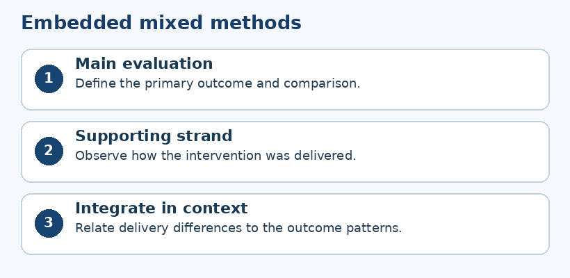
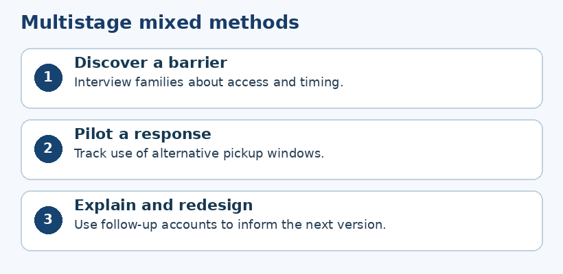

Compare two accounts of a common issue during a similar period. Analyse the numerical and qualitative evidence separately, then bring the results together to answer a shared question.
Methodological sources (Fetters et al., 2013; Guetterman et al., 2015).
When to Use It
What do the records and accounts show about the same issue?
Compare each section’s borrowing records with accounts of borrowing during the same term. Frequent loans alongside reports of poor access could reflect uneven access within a section.
Write one mixed question that gives both sources a job. “How is monthly borrowing distributed, and how do learners describe the opportunities they had to borrow?” makes clear why a transaction log and firsthand accounts belong in the same investigation. Specify whether the school needs to understand reach, frequency or convenience before selecting indicators.
Evidence for Both Strands
Assemble measures and accounts that refer to comparable settings, populations and dates. Record who contributed to each strand and whether the evidence can be linked by person, section or school.
The two strands must address aspects of an identifiable shared issue. Loan volume captures transactions, while interview accounts can reveal opportunity, convenience or exclusion.
How to check. Ask what one unit of each measure actually represents. Write the specific question each strand can answer independently.
If the condition is weak. If meanings only partly overlap, name the overlap precisely. Present other findings as added context rather than treating different constructs as conflicting measures of one thing.
Timing and exposure
Conclusions depend on the groups having a reasonably comparable period of access to the service. A temporary schedule change can affect one source more than another.
How to check. Match log dates against interview prompts and check when opening hours, holidays or book supplies changed.
If the condition is weak. Restrict the comparison to the shared period, or make separate rows for each period and describe the change that separates them.
Comparable units
The unit at which datasets meet sets the level of the claim. Section-level totals can be combined with accounts about a section even if individual borrowers cannot be identified.
How to check. List the unit of each result and how each speaker was recruited. Check whether the people interviewed include occasional borrowers and nonborrowers.
If the condition is weak. If only sections can be linked, keep the conclusion about sections. Do not assign the section’s typical experience to every learner.
Independent analysis of each strand
Each strand needs a credible analysis before it enters the display. Selecting quotations to match a table can hide accounts that challenge the first explanation.
How to check. Check how repeat loans were handled and how contradictory interview passages were identified. Preserve each strand’s original summary before merging.
If the condition is weak. Revisit each analysis against its source material. Where evidence is thin, show an empty or uncertain cell and specify what would fill it.
Timing and Integration
Define the shared issue and unit of comparison before collection. Select defensible analyses for each strand.
Construct a joint display with a row per unit or issue. Align each numeric result with the corresponding qualitative finding.
Investigate agreement, complementary information and apparent disagreement. Check measurement, sampling and timing before drawing a combined conclusion.

Quantitative finding: Count loans and unique borrowers in the same period. Qualitative finding: Analyze how families describe access and pickup. Merge by section: Place findings side by side and investigate discrepancies.
Worked Integration Example
Illustrative joint display, Section A: 42 loans among 30 learners in one month. Interviews describe books being hard to obtain after class. Section B: 25 loans among 30 learners. Families describe flexible pickup.
The higher loan count and access complaints in A can coexist if repeat borrowers account for many loans or borrowing is difficult at particular times. Check unique borrowers and time of borrowing before interpreting the difference.
Applying the approach
Build a joint display with a row for each section and columns for loan volume, learners reached, qualitative finding and combined interpretation. Use the same month and the enrolled population for each row. Keep a separate record of who was interviewed so you can explain whose voices the qualitative column represents.
Extend the illustrative records above. Suppose 12 of the 30 learners in Section A generated its 42 loans, while 20 of the 30 in Section B generated its 25 loans. A reached 40% of enrolled learners and B reached about 67%. Among borrowers, the averages were 3.5 loans in A and 1.25 in B. Those two indicators answer different questions.
In A’s row, place the report of limited after-class access beside the reach estimate. In B’s row, set the flexible-pickup account beside its wider reach. Re-read interviews for students who borrowed during school hours or chose not to borrow for other reasons. Their accounts can narrow the interpretation or point to another barrier.
Repeat borrowing could coexist with unequal access
Section B
25
30
Pickup times flexible
Convenient access need not yield more loans
Follow-up
—
—
Ask about timing and repeat borrowers
Compare unique borrowers within the same month
Interpreting the Combined Findings
Create a joint display with one row per section and columns for the numerical pattern, interview finding and combined interpretation. Explore disagreements.
A possible combined finding is that Section A recorded more transactions but reached fewer learners, while scheduling difficulties were prominent in some accounts. These data justify testing another pickup period and monitoring unique borrowers. They do not establish that changing the hours will increase participation. Book availability, repeat borrowing and the small interview sample remain relevant to that decision.
Alternatives and Common Mistakes
Choose explanatory sequential when you first need numerical results to decide whom to interview.
Pairing school-wide totals with quotations from an unconnected group can produce a misleading comparison. Identify precisely which units each source represents.
References
Fetters, M. D., Curry, L. A., & Creswell, J. W. (2013). Achieving integration in mixed methods designs—Principles and practices. Health Services Research, 48(6 Pt. 2), 2134–2156. https://doi.org/10.1111/1475-6773.12117
Guetterman, T. C., Fetters, M. D., & Creswell, J. W. (2015). Integrating quantitative and qualitative results in health science mixed methods research through joint displays. The Annals of Family Medicine, 13(6), 554–561. https://doi.org/10.1370/afm.1865
Explanatory sequential design
Overview
Use a quantitative first phase to identify a pattern that warrants explanation. Design the qualitative follow-up around that result.
Methodological sources (Fetters et al., 2013; Ivankova et al., 2006).
When to Use It
Why did groups or learners show different numerical results?
After comparing reading gains, invite learners with varied gains to discuss their practice opportunities. Pair each group’s score pattern with its accounts.
The strongest reason to choose this sequence is that teachers cannot decide whom to interview or what to probe until they inspect the results. Write a provisional outcome question and leave room to refine the follow-up. A uniform satisfaction survey given at the same time as the posttest would give little opportunity for the first finding to shape the second phase.
Evidence for Both Strands
Collect a quantitative outcome with enough context to interpret it. Plan how to select participants or settings for follow-up and how to keep the two phases connected.
An apparent contrast must be meaningful enough to explain. Unmatched records, ceiling effects or a changed score scale can create apparent gain differences.
How to check. Recompute gains for matched learners, examine individual changes beside group summaries and check whether starting scores leave comparable room to improve.
If the condition is weak. If the pattern disappears after a correction, revise the follow-up question. Interviews could explore the measurement problem if it matters to the school.
Purposeful connection between phases
Phase one must shape a consequential phase-two decision, such as selecting contrasting cases or developing result-specific prompts.
How to check. Write each selection criterion next to the result that prompted it. Identify typical cases and exceptions within each group as well as across groups.
If the condition is weak. When recontacting particular learners is impossible, recruit from comparable settings and explain the reduced precision of the connection.
Access across contrasting experiences
Learners who are easy to interview may differ systematically from those whose attendance or scores are most difficult to explain.
How to check. Compare the gain range and attendance of responders with those invited. Check whether membership in a score category could be revealed through recruitment.
If the condition is weak. Use private invitations and varied interview times. If a subgroup remains absent, qualify the explanation and describe the missing perspective.
Sufficient time for interpretation
The questions must be shaped after the score analysis, while experiences are recent enough for participants to recall specific episodes.
How to check. Check the interval between a teaching session, result review and interview. Look for records that could independently establish events such as cancelled sessions.
If the condition is weak. Use concrete date or lesson prompts. Separate recalled experiences from events confirmed by attendance records or lesson logs.
Timing and Integration
Inspect the scores and identify a pattern to investigate, including possible measurement issues. Select cases that represent contrasting or unexpected results.
Use the results to build interview questions. Analyse accounts within and across the selected cases.
Compare proposed explanations with the initial pattern. State what is supported by the two strands and what requires further evidence.

Start with scores: Identify learners with different gain patterns. Connect samples: Use the score pattern to select and frame interviews. Explain variation: Compare accounts within and across gain groups.
Worked Integration Example
Illustrative result: two tutorial groups had the same starting median and different median gains. Select learners with small and large gains within each group, then ask about actual practice time and feedback.
If missed practice was common among some low-gain learners but several high-gain learners also missed sessions, practice time offers a partial explanation. Examine what differed for those exceptions.
Applying the approach
Suppose one group gained a median of four reading points and another gained one. Preserve the individual results and identify learners with larger and smaller changes in each group. Deliberately include an exception, such as a learner with a large gain in the group with a smaller median. A difference between group medians does not imply that every learner follows the group pattern.
Ask participants to describe their most recent independent practice, what feedback they received, and when they could use it. Invite an account of a session that was less helpful. These prompts allow explanations other than attendance. Analyze each account first, then compare accounts across the selected gain patterns.
In a case comparison sheet enter the gain, attendance record, account of feedback, and evidence that challenges the proposed explanation. If some higher-gain learners missed several sessions but described substantial practice at home, separate opportunities at school from practice outside school. Examine low-gain learners with good attendance before interpreting attendance alone as the mechanism.
School attendance alone gives an incomplete explanation
L4
B
3
Attended regularly but rarely read aloud
Ask about active practice
Interpreting the Combined Findings
Identify the original result, how it shaped the follow-up and what the accounts plausibly explain. Mark explanations that still need testing.
Model a bounded conclusion: The score contrast guided selection of learners with different gains. Follow-up accounts suggested that chances to act on feedback varied even among regular attendees. The explanation fits several interviewed cases and helps refine a future observation schedule. The interviews were purposefully selected, so they cannot estimate how common that experience was in the full cohort.
Alternatives and Common Mistakes
Choose convergent when both sources can be gathered together and neither depends on earlier results.
Interviewing only high scorers leaves the lower end of the pattern unexplored. A follow-up account can suggest a mechanism without proving that it caused a score change.
References
Fetters, M. D., Curry, L. A., & Creswell, J. W. (2013). Achieving integration in mixed methods designs—Principles and practices. Health Services Research, 48(6 Pt. 2), 2134–2156. https://doi.org/10.1111/1475-6773.12117
Ivankova, N. V., Creswell, J. W., & Stick, S. L. (2006). Using mixed-methods sequential explanatory design: From theory to practice. Field Methods, 18(1), 3–20. https://doi.org/10.1177/1525822X05282260
Exploratory sequential design
Overview
Start with qualitative exploration when existing concepts or measures do not adequately capture the setting. Build a tool or strategy from the findings, then examine its use quantitatively.
Methodological sources (Fetters et al., 2013; Onwuegbuzie et al., 2010).
When to Use It
How can local experiences inform a measure or strategy?
Interview families about reading routines, turn recurring ideas into survey items, check how families understand them and pilot the survey in several sections.
This sequence suits a school developing a local measure of home reading support when shared book reading is only one possible routine. The concept must be developed before asking how often it occurs. If the aim is simply to document diverse experiences, a qualitative account may already answer the question and a survey would add unnecessary burden.
Evidence for Both Strands
Collect rich local accounts, preserve the concepts behind proposed items and plan a suitable pilot sample. Specify which property of the tool or strategy the numerical phase will examine.
Initial accounts must cover enough variation to support the local concept. An item based entirely on one type of family routine may omit another legitimate way of supporting reading.
How to check. Compare accounts across schedules, caregivers, languages and access to print or digital texts. Identify who is missing and which practices the draft cannot represent.
If the condition is weak. Recruit contrasting accounts where feasible. Keep the scope of the construct narrow until there is evidence for broader coverage.
A traceable building step
Readers should be able to see how a qualitative insight shaped a specific item, option or procedure in the quantitative phase.
How to check. Create a row for each concept, supporting excerpts, draft wording and the reason for the response choices. Check whether item wording adds a judgment absent from the accounts.
If the condition is weak. Split double-barreled items and revise ambiguous terms. Preserve aspects of experience that cannot sensibly be reduced to a single score.
Respondent interpretation
An item can be grammatically clear but interpreted differently by the families who will answer it. Misunderstanding changes what a number represents.
How to check. Ask intended respondents to restate the item, explain how they recalled the event, and describe how they chose their response.
If the condition is weak. Revise the recall period, examples or options and try the new wording again. Maintain a version record to distinguish responses to different wording.
Appropriate pilot evidence
A pilot can reveal missing values, poor response options and implausible response patterns. Different measurement claims require different evidence and samples.
How to check. State before piloting whether the aim is feasibility, coverage, consistency or another property. Check how recruitment limits those inferences.
If the condition is weak. Report the property actually examined and carry unresolved questions into a further study. Avoid using a preliminary pilot to set a high-stakes cut score.
Timing and Integration
Analyse interviews to identify relevant concepts and local language. Write a traceable rationale linking each item or procedure to an insight.
Review candidate items with knowledgeable readers. Try them with intended respondents to check interpretation and revise unclear wording.
Pilot the revised tool and analyse responses, missingness and variation. Bring results back to the original construct and document decisions.

Start with accounts: Identify home practices in family interviews. Build a measure: Translate each local idea into an item and check its meaning. Pilot and revise: Use item results and feedback to decide what to retain.
Worked Integration Example
Illustrative parent statement: “She reads while I cook, then tells the story when I’m free.” This suggests asynchronous family support. Draft item: “In the past seven days, on how many days did your child tell someone at home about a story they had read?”
If many mark the item blank because they associate reading with printed books alone, return to interview meanings and clarify whether digital stories count. The decision links local meaning to pilot performance.
Applying the approach
Start a development table with the excerpt about a child telling a story after a caregiver finishes cooking. Record the tentative concept as delayed discussion of a self-read story. Explain why the draft asks about occasions when the child discussed a story, and why it does not require an adult to be present while the child reads.
During a cognitive interview, ask a caregiver whether an audio story, a text read on a phone, or a story read aloud together would count. Decide which belong to the defined construct. Record why you retained or removed examples. Re-test the revised wording in the language in which families will receive the survey.
Suppose 5 of 20 pilot respondents leave the original item blank. That is 25% missing. Examine their notes before interpreting a blank as zero days. If some lacked an opportunity and others could not decide whether digital reading counted, distinguish a genuine zero from an unusable response. Document what the second version changes and pilot that version separately.
Trace each local idea to an item or indicator, give the pilot findings and record which items need revision. A pilot alone does not establish validity.
A defensible report links the qualitative insight to the item and shows why the pilot prompted revision. For instance, families described reading support across separate parts of a day. Pilot feedback identified uncertainty about digital stories, and the revised prompt now specifies eligible reading formats. The next field test will examine interpretation across language groups. This evidence supports wording refinement, while stronger claims about score comparability require additional investigation.
Alternatives and Common Mistakes
If the school already has a suitable measure and needs to explain its results, consider explanatory sequential.
A high response rate alone does not establish measurement quality. State which aspects of interpretation, reliability or validity still need examination.
References
Fetters, M. D., Curry, L. A., & Creswell, J. W. (2013). Achieving integration in mixed methods designs—Principles and practices. Health Services Research, 48(6 Pt. 2), 2134–2156. https://doi.org/10.1111/1475-6773.12117
Onwuegbuzie, A. J., Bustamante, R. M., & Nelson, J. A. (2010). Mixed research as a tool for developing quantitative instruments. Journal of Mixed Methods Research, 4(1), 56–78. https://doi.org/10.1177/1558689809355805
Embedded qualitative strand in an intervention study
Overview
Include a supporting strand inside a larger intervention or evaluation design to understand how delivery, participation or context may shape the observed outcome.
Methodological sources (Fetters et al., 2013; Moore et al., 2015).
When to Use It
How was an intervention experienced while outcomes were measured?
Alongside a tutoring evaluation, observe how tutors group learners. Compare delivery notes with each group’s attendance and outcome patterns.
Specify how the intervention is expected to work. In a tutoring project, timely peer feedback might increase opportunities to correct misunderstandings during practice. Teachers can then look for observable steps between delivery and outcome. The main design still governs the strength of any effect claim. Process evidence can describe delivery in a one-group evaluation, but it cannot supply a missing comparison group.
Evidence for Both Strands
Collect the main outcome and meaningful implementation evidence such as observation notes, accounts of participation and a record of when sessions occurred. Link by group or period where possible.
The main evaluation estimates or describes an outcome. The supporting strand addresses a process question that can improve interpretation, such as what learners actually experienced.
How to check. Write the outcome question and the process question side by side. Identify which information the outcome assessment will never capture on its own.
If the condition is weak. Refocus observations on a plausible process and specify how they will connect to outcomes. Eliminate process questions unrelated to the evaluation.
Coverage of implementation
An observed demonstration lesson may be unlike an ordinary session. A process account needs evidence from the variation in delivery that matters to interpretation.
How to check. Map observed sessions by tutor, group, stage, attendance and disruptions. Compare the observation schedule with all sessions actually delivered.
If the condition is weak. Include less-attended or rescheduled sessions where possible. Label gaps and avoid treating unobserved sessions as proof of consistent delivery.
Comparable linkage
Outcomes belong to particular learners or groups and time windows. Linking a late observation to all earlier practice can create an inaccurate exposure history.
How to check. Match dates, group assignment, staff changes and the timing of outcome measures. Check whether a learner moved between groups.
If the condition is weak. Connect evidence at the most defensible level. If individual exposure is unknown, describe patterns of delivery by group and retain that limit.
Role and reactivity
Tutors can change their teaching when observed, and learners may hesitate to criticize a teacher who also scores them. These conditions can distort accounts of implementation.
How to check. Compare routine lesson notes with observed sessions. Examine whether feedback differs when a neutral colleague invites an account.
If the condition is weak. Collect process evidence in more than one way when feasible. Describe the observer’s role and preserve accounts showing unexpected or disappointing experiences.
Timing and Integration
State the main evaluation question and the supporting process question. Plan observations across varied sessions, including less successful ones.
Analyse outcome data according to the evaluation design. Code process data for relevant features of delivery and unexpected events.
Link delivery evidence to the corresponding group or period. Interpret possible contextual influences and alternative explanations.

Main evaluation: Define the primary outcome and comparison. Supporting strand: Observe how the intervention was delivered. Integrate in context: Relate delivery differences to the outcome patterns.
Worked Integration Example
Illustrative result: Groups A and B show similar average improvement. Observations record regular peer feedback in A and extra teacher-led sessions in B. The combined evidence suggests that similar outcomes occurred under different delivery conditions.
Report the difference in implementation and check attendance and baseline scores. The data cannot by themselves establish that either teaching practice produced the gains.
Applying the approach
Define three separate quantities for a session: planned duration, minutes actually delivered, and the portion each learner attended. In the fieldnotes, describe who gave feedback, what the learner did next and how feedback opportunities differed within the group. Capture departures from the lesson plan without assuming every departure is harmful.
Create a group-by-period comparison. Suppose peer feedback occurred in four of five observed sessions in A and one of five in B. B’s notes also document extra teacher-led sessions. Write “observed sessions” beside each denominator. Inspect the outcome summaries and attendance for the corresponding groups before interpreting the difference in practice.
Compare explanations for similar gains. Peer feedback and extra direct teaching may both have provided usable practice, or the same test may have been insensitive to changes in feedback use. Look for instances where learners received feedback but could not apply it, or improved without the observed activity. These cases help identify the next process question.
Check baseline scores and attendance before attributing differences to delivery
Interpreting the Combined Findings
Present outcomes alongside evidence about delivery and context. State which conclusions the evaluation design supports.
An integrated report can say that both groups showed similar average gains while observed sessions offered different opportunities for feedback. A useful revision would be to document how learners respond after feedback in both groups. Report baseline differences, incomplete observation coverage and alternative explanations alongside this suggestion. Avoid attributing outcomes to an individual tutor from group averages and a small set of observation notes.
Alternatives and Common Mistakes
Use convergent when the two sources address the main question with similar priority.
A positive quotation after the intervention gives little evidence about implementation across sessions. Choose an observation or interview schedule tied to the supporting question.
References
Fetters, M. D., Curry, L. A., & Creswell, J. W. (2013). Achieving integration in mixed methods designs—Principles and practices. Health Services Research, 48(6 Pt. 2), 2134–2156. https://doi.org/10.1111/1475-6773.12117
Moore, G. F., Audrey, S., Barker, M., Bond, L., Bonell, C., Hardeman, W., Moore, L., O’Cathain, A., Tinati, T., Wight, D., & Baird, J. (2015). Process evaluation of complex interventions: Medical Research Council guidance. BMJ, 350, Article h1258. https://doi.org/10.1136/bmj.h1258
Multistage mixed methods design
Overview
Use a multistage design for a programme of linked investigations where decisions in later phases depend on combined evidence from earlier phases.
Methodological sources (Fetters et al., 2013; O’Cathain et al., 2019).
When to Use It
How should evidence from one phase guide the next phase?
Interview teachers about reading barriers, pilot a support routine and track participation, then interview tutors to explain which elements need revision.
Use this approach when the school needs successive decisions about a program, such as diagnosing an access barrier, piloting a change and adapting it for households still unreached. An action research cycle can contain these elements, but combining several activities into one report requires a clear account of how quantitative and qualitative findings shaped actual decisions.
Evidence for Both Strands
Plan for several phases, consistent definitions across them, and documentation of changes to participants, tools or delivery. Identify who can use each phase’s findings to make a decision.
Several activities form a multistage inquiry when evidence from one phase informs a decision in another, all contributing to one overarching question.
How to check. Write the planned output and decision after each phase. Check whether removing an earlier phase would actually change the later plan.
If the condition is weak. If phases can be removed without changing anything, clarify the connection or report separate studies. Avoid making every routine monitoring activity a research phase.
Continuity of indicators
Policy, eligibility or recordkeeping can change between phases. Comparisons require enough continuity to distinguish change in reach from change in its definition.
How to check. Record who was eligible, what counted as a distinct borrower and how repeat loans were handled for each version of the service.
If the condition is weak. Recalculate using common definitions where records allow. When they do not, display phase-specific results and explain why they cannot be directly compared.
Timing and transition decisions
Teams need time to analyze one phase before revising the next. Immediate rollout can make later activities insensitive to the earlier evidence.
How to check. List each phase’s decision date, evidence required and person able to act. Check whether missing or conflicting evidence could plausibly reverse the decision.
If the condition is weak. Allow time for clarification or a small additional check. Record uncertainty and decide whether to continue, adapt, pause or collect more information.
Changing participation
Families entering a pilot may differ from families who helped design it. Later participants may also have different needs from families who decline or leave.
How to check. Describe the population and recruited group at each stage. Check who cannot use the new service and whose views are absent from follow-up.
If the condition is weak. Seek perspectives from nonusers when feasible. Keep evidence about acceptability among users separate from conclusions about equitable reach.
Timing and Integration
Map each phase to an explicit decision. Show where qualitative and quantitative strands connect and where earlier evidence gets revisited.
Analyse and integrate findings at each planned point. Keep a record of what changed in the programme or instrument and why.
Draw a final interpretation spanning the stages. Note when changes in delivery or participants limit direct comparisons.

Discover a barrier: Interview families about access and timing. Pilot a response: Track use of alternative pickup windows. Explain and redesign: Use follow-up accounts to inform the next version.
Worked Integration Example
Illustrative sequence: Family interviews identify pickup times as a barrier. A pilot offers two pickup windows and counts unique borrowers. More families use the later time, but follow-up interviews show that transport remains a barrier for some.
Maintain the second window and test a classroom collection option in the next cycle. Record which evidence supported each change and what would indicate improvement in reach.
Applying the approach
At discovery, use interview accounts to distinguish pickup-time conflicts from transport barriers. Decide which barrier the pilot can realistically address. Record why two pickup windows were selected and how you will know whether they extend reach. Distinct families served per eligible family is a better reach indicator than total books loaned.
At the pilot stage, suppose 50 families are eligible, 10 use the early window and 14 use the late one. Attendance records show four used both. The two windows reached 20 distinct families, or 40%, rather than 24. Ten families used only the late window. These records describe uptake under the pilot schedule. They do not reveal how many families would otherwise have borrowed.
In follow-up, invite families who used only the late window and families who used neither. Compare accounts of scheduling relief with accounts of persistent transport difficulty. If a classroom collection option is introduced, record its start date, eligibility, staffing and the new indicator for each route. Keep separate rows for the original pilot and the adapted version.
Show the evidence, decision and resulting modification at each stage. Explain how the combined findings informed the final design.
Summarize the decisions in chronological order. Family interviews identified time and travel barriers. The two-window pilot reached 20 of 50 eligible families, and some users explained how the later time helped. Nonuser accounts justified a separate test of classroom collection. Report the new option as a proposed or newly tested adaptation according to what actually happened. Distinguish evidence about feasibility and reach from evidence that the service improved reading attainment.
Alternatives and Common Mistakes
Use a single sequential design when one follow-up phase answers the question.
Several unrelated activities do not constitute a multistage design. Make the decision and evidence linking every pair of phases explicit.
References
Fetters, M. D., Curry, L. A., & Creswell, J. W. (2013). Achieving integration in mixed methods designs—Principles and practices. Health Services Research, 48(6 Pt. 2), 2134–2156. https://doi.org/10.1111/1475-6773.12117
O’Cathain, A., Croot, L., Duncan, E., Rousseau, N., Sworn, K., Turner, K. M., Yardley, L., & Hoddinott, P. (2019). Guidance on how to develop complex interventions to improve health and healthcare. BMJ Open, 9(8), Article e029954. https://doi.org/10.1136/bmjopen-2019-029954